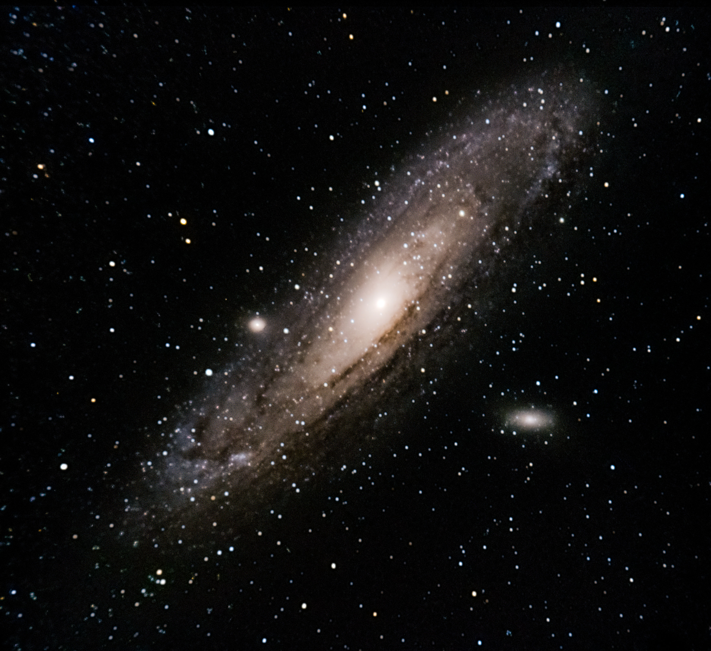
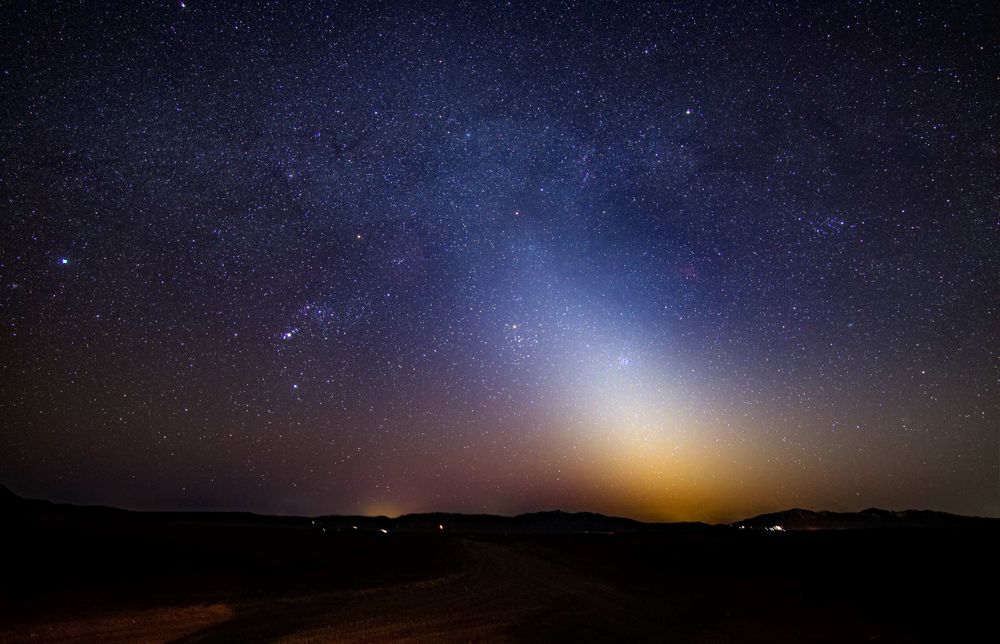
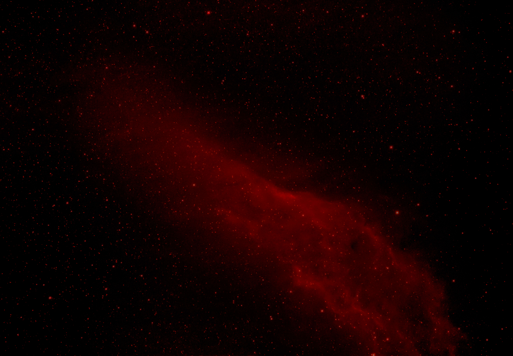
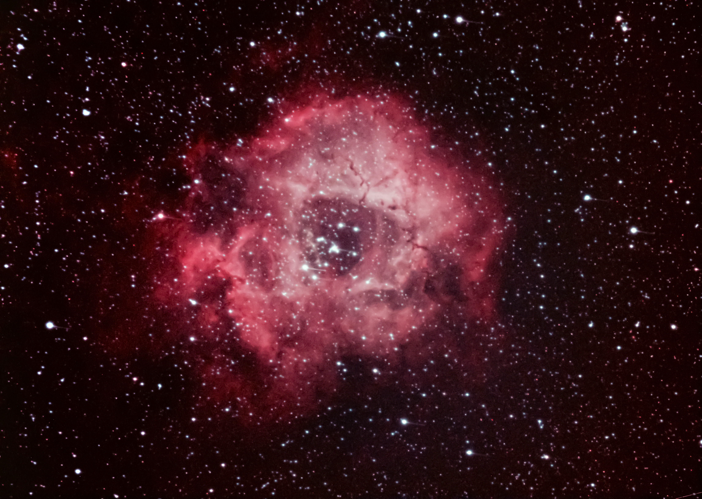
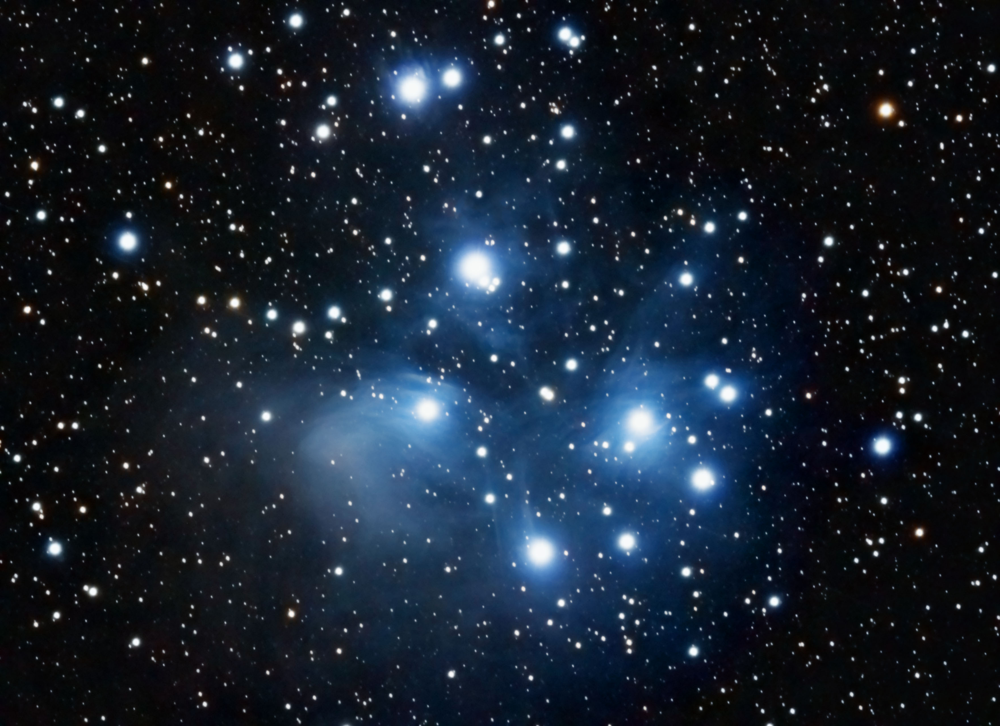
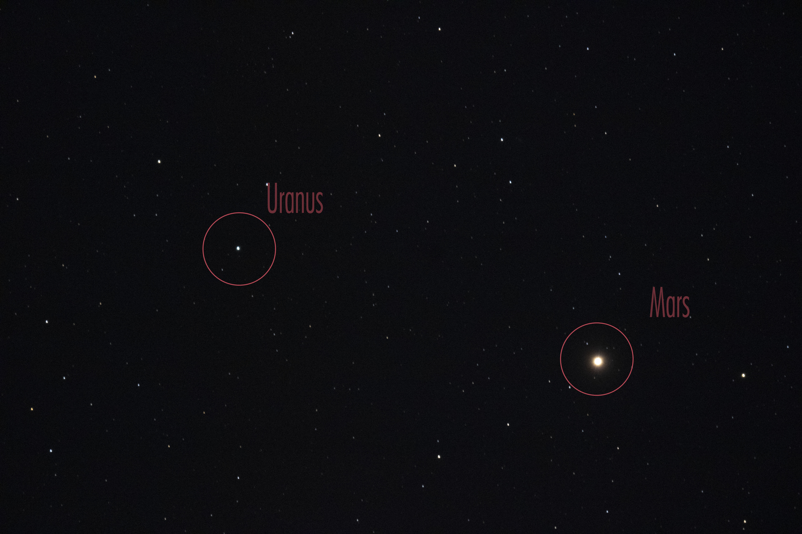
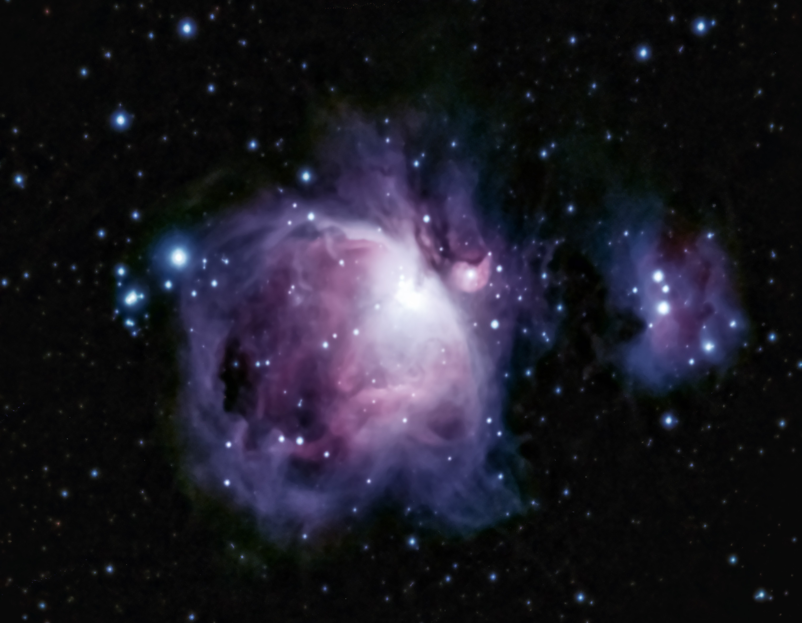
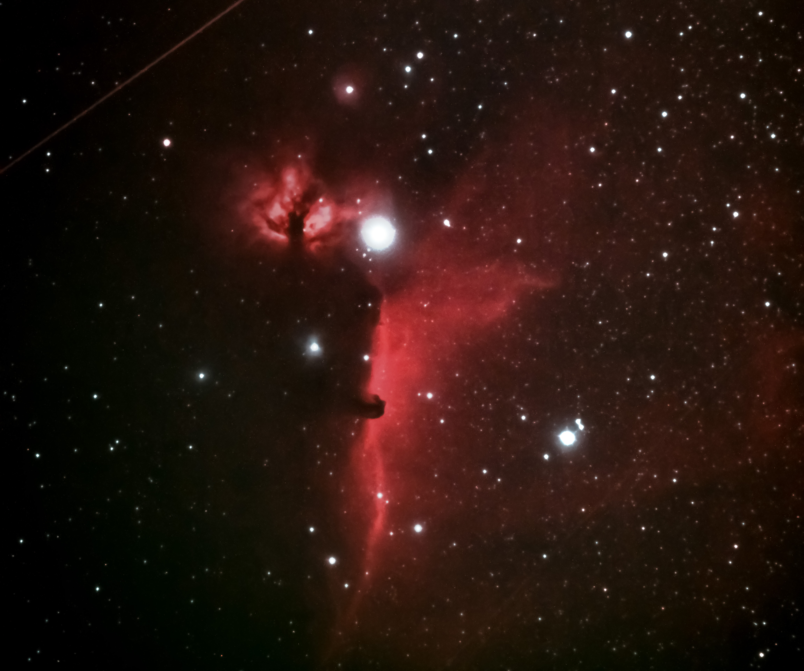
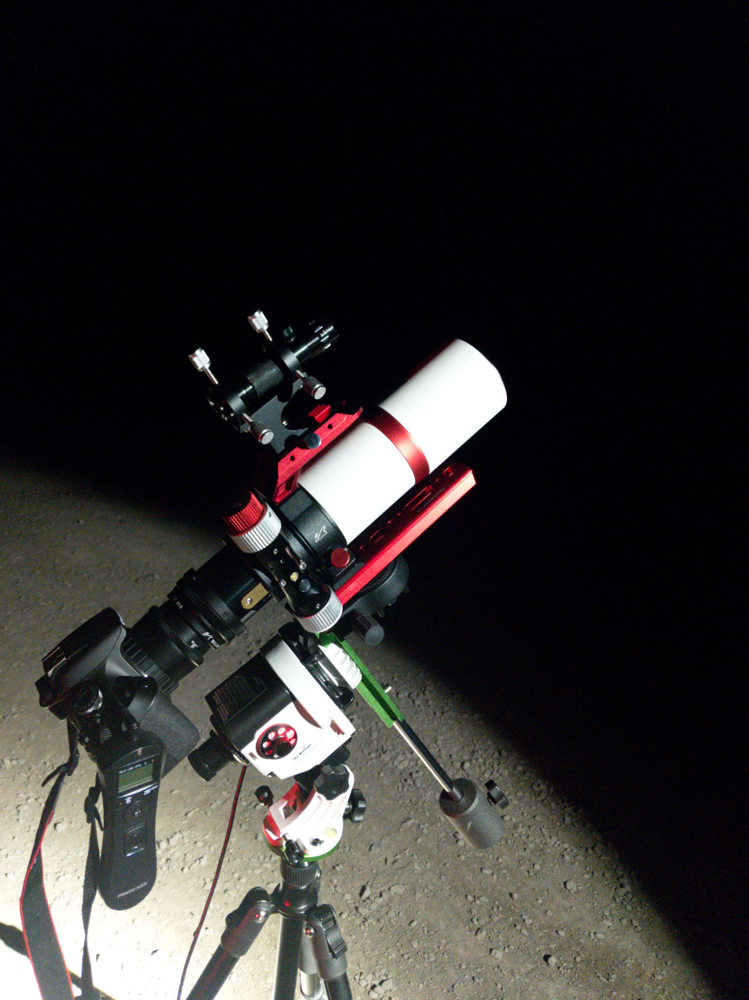

IZAC ASTRO
The Gallery









How does it work?

How did I capture the images you see above? Well before you ask, no
I do not work for NASA. Astrophotography is easier than you might
think. All it requires is some basic equipment, and a whole lot of
patience. You can see my setup on the image to the right. Below is
my equipment list.
-
Required:
- Camera
- Tripod
- Telescope
- Star Tracker
- Guide Laser
Optional: